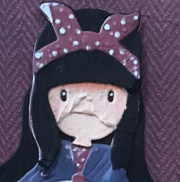

Rosa is a girl from Belfast who is aged 5. She has a wee brother called Callum - who has his own app but isn't in this one.
Rosa likes her bear and loves doing crafts, making junk art and playing with her friends.
Rosa loves rainbows and her baby brother (even though he's not a baby any more!)